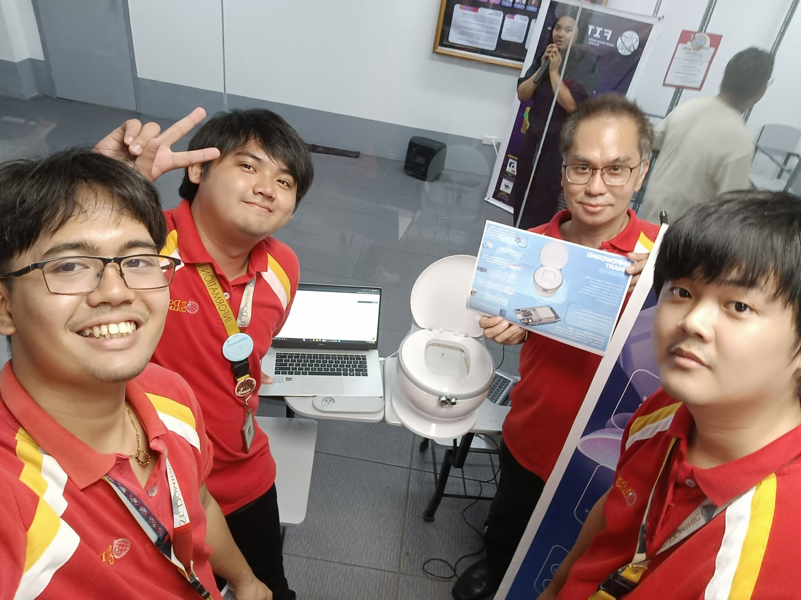

Menu

This project was developed by our group as part of our Project Management course during the second semester of my second year at St. Dominic College of Asia (SDCA). The project involved enhancing the existing portfolio website of one of our group members by integrating a functional contact form connected to a cloud-based database. The contact form allows visitors to submit their names, email addresses, and personal messages, which are automatically stored and updated in the database in real time. This feature enables the database owner to easily access and review submitted responses. My primary contribution to this project was serving as a Front-End Developer, focusing on the website's user interface and ensuring a functional and user-friendly experience.
This project was developed by our group as part of our Application Development course during the first semester of my third year at St. Dominic College of Asia (SDCA). The web application was created for Unicom Technologies and serves as an IT product catalog and quotation system. It allows users to browse various IT products and generate quotations based on their selected items. My primary contributions to this project were in documentation and front-end development, where I helped prepare the project's technical documentation and develop the user interface to ensure a functional and user-friendly experience.
This project was developed by our group as part of our Capstone 1 course during the second semester of my third year at St. Dominic College of Asia (SDCA). The web application provides real-time monitoring, device configuration, maintenance task management, analytics, and alerts. The project was designed so that the toilet hardware could continue to perform its local sequence while the cloud platform provides monitoring, reporting, alerting, task dispatch, and remote administrative functions. Developed using Next.js, TypeScript, Tailwind CSS, Firebase, and MQTT, the project is currently under development. My primary contributions include idea development and refinement, project documentation, front-end development, and assisted in the back-end development. The team consists of Christian Ivan A. Los Baños (me), Dennis V. Carlos, James Carl V. Alvarez, Justine M. Lopez, and Maria Rollainne R. Lindog.
This mobile application was developed by our group as part of our Capstone 1 project at St. Dominic College of Asia (SDCA). It is designed to streamline maintenance task management and facilitate user reporting by allowing maintenance personnel to receive, acknowledge, and complete tasks assigned through our web application. Key features include step-by-step task instructions, photo documentation as proof of completion, and task history tracking. Developed using React Native, Expo, TypeScript, Firebase, and Android Studio, the application is currently under development. My primary contributions include assisting with UI design, identifying bugs, and troubleshooting issues to improve the application's functionality and user experience. The team consists of Christian Ivan A. Los Baños (me), Dennis V. Carlos, James Carl V. Alvarez, Justine M. Lopez, and Maria Rollainne R. Lindog.
This project was developed as an alternative course requirement for Capstone 1 at St. Dominic College of Asia (SDCA), specifically for students who were unable to participate in the international mobility program due to personal circumstances, including myself. The project is an LGU-based web application designed to streamline the delivery and restocking of essential supplies for hospitals and relief centers, while also providing inventory and donation management capabilities. Key features include medical supply request submissions, cash and in-kind donations, delivery tracking, data analytics, user management, and other functionalities aimed at improving resource allocation, operational efficiency, and transparency in local government services.
This IoT project was developed by our group during the second semester of my third year at St. Dominic College of Asia (SDCA). It is an IoT-based smart toilet system designed to improve sanitation, water conservation, and maintenance efficiency through automated lid operation, sensor-triggered flushing, UV-C disinfection, and real-time device monitoring. The system utilizes ESP32/ESP8266 microcontrollers, ultrasonic and water flow sensors, servo motors, relays, and MQTT communication to support automation and cloud-based monitoring. My primary contributions included project documentation, assisting with hardware development and implementation, refining project ideas, and identifying and troubleshooting hardware defects to improve the system's overall functionality and reliability.
